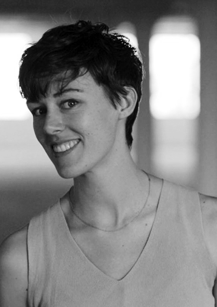

Spring 2020
Introduction
What skills — emotional and organizational — help us work together to achieve progressive social change? How might we create bonds of trust amidst interpersonal conflict, while still allowing space for difference and autonomy? How might the pressures generated by austerity and economic crisis generate either new openness to change or greater rigidity and closure. How can interpersonal conflict in groups be transformed into an opportunity for greater communication, new perspectives, and enhanced collective capacity. What does it actually take to create the kinds of spaces that allow people to make mistakes and come back again? And how might aesthetic objects aid us through such difficult dynamics, interrupting pre-given scripts and opening new, collaborative visions?
‘Through Conflict: Collective Capacity amidst Capitalist Crisis’ brings together the work of artist Caroline Woolard, leading community-oriented transformative justice educator Esteban Kelly from the United States Federation of Worker Cooperatives, and faculty members Shannan Hayes and Craig Borowiak, teaching Haverford College courses on political economy and affect theory, in a semester-long investigation into the above questions.
Collaborators

Lead Artist
Caroline Woolard employs sculpture, immersive installation, and online networks to imagine and enact systems of collaboration and mutual aid. Her work has been commissioned by and exhibited in major national and international museums, including MoMA, the Whitney Museum, and Creative Time. Recent scholarly writing on her work has been published in The Brooklyn Rail (2018); Artforum (2016); Art in America (2016); The New York Times (2016); and South Atlantic Quarterly (2015). Woolard’s work has been featured twice on New York Close Up (2014, 2016), a digital film series produced by Art21 and broadcast on PBS. She is the 2018–20 inaugural Walentas Fellow at Moore College of Art and Design and the inaugural 2019–20 Artist in Residence for INDEX, a new initiative at the Rose Museum.
Executive Director
US Federation of Worker Cooperatives
Esteban Kelly is an important leader and creative force in solidarity economy and co-op movements. He has served on numerous boards including the USFWC, the US Solidarity Economy Network, the National Cooperative Business Association (NCBA-CLUSA), and the Cooperative Development Foundation (CDF). He is a co-founder of the cross-sector Philadelphia Area Cooperative Alliance (PACA), and recently worked at the New Economy Coalition as Development Director and then Staff Director. Esteban is a mayoral appointee to the Philadelphia Food Policy Advisory Council, following eight years as a worker-owner at Mariposa Food Co-op institutionalizing its staff collective and expanding food access in West Philly.
Formally introduced to cooperatives through student housing co-ops, in Berkeley California, Esteban soon began organizing co-ops across Canada and the US with the North American Students of Cooperation (NASCO). Esteban was inducted into NASCO’s Cooperative Hall of Fame in 2011, in recognition of his ten years of service – including seven years on their board and three years working as their Director of Education and Training.
Esteban is also a dynamic educator and movement facilitator. He is a founder and core trainer with AORTA, a worker co-op whose consulting supports organizations fighting for social justice and a solidarity economy. He and his family live in the LCA housing co-op – a community land trust in West Philadelphia.
Associate Professor of Political Science
Haverford College
Craig Borowiak received a B.A. in Philosophy from Carleton College and a Ph. D in Political Science from Duke University. He joined the Haverford political science faculty in fall 2004. Trained in political theory and political economy, his teaching and research interests focus on capitalism and post-capitalism, solidarity economies, globalization, democratic theory, the global political economy, transnational civil society, cosmopolitanism, and the history of political economic thought.
Pre-doctoral Fellow and Visiting Instructor of Visual Studies
Haverford College
Shannan L. Hayes is a Pre-Doctoral Fellow and Visiting Lecturer in Visual Studies at Haverford College, and a Ph.D. Candidate in the Program in Literature and Feminist Studies at Duke University. She holds an M.A. in Continental Philosophy with a certificate in Women’s and Gender Studies from Stony Brook University (2012), where she also earned an M.F.A in sculpture and installation (2009). Her research focuses on the politics of art and aesthetics in late capitalism, with an emphasis on feminist political thinking around affect, identity, social reproduction, and participatory world-building.
Publications include “Wanting More” on the artwork The Waiting Room by Simone Leigh (forthcoming in differences, May 2020), “Counterpublic & Counterprivate: Zoe Leonard, David Wojnarowicz, and the Political Aesthetics of Intimacy” (co-authored with Max Symuleski, forthcoming December 2019 in Women & Performance), and “Justice Regained: The Objects and Lessons of Object Lessons” (published in Feminist Formations, Dec. 2013). She will defend her dissertation on aesthetics and social reproduction in March of 2020.
Events
US Federation of Worker Cooperatives: Esteban Kelly, Director
Non-Profit Partner
1.21~
123 S Broad Street, Suite 1320, Philadelphia
From Platform Cooperativism:
“Esteban is the Executive Director for the US Federation of Worker Co-ops and a founding worker-owner in AORTA, a co-op whose facilitation supports organizations fighting for social justice and a solidarity economy. Esteban previously worked at the New Economy Coalition and has worked in co-ops for over 20 years. He is a board member of the American co-op apex organization, the National Cooperative Business Association, known internationally as CLUSA. He is a mayoral appointee and co-chair of the Philadelphia Food Policy Advisory Council and won a Social Innovation Award for Public Policy in 2018.
Celebrating ten years of digital labor conferences at The New School, Who Owns the World? The State of Platform Cooperativism is the most international gathering of its kind. This much-needed event summoned scholars and founders of platform cooperatives — businesses that use a website, mobile app, or protocol to sell goods or services while relying on democratic decision-making and shared ownership of the platform by workers and users.
Platform Cooperativism is not a fleeting idea but an iterative process that unfolds with the support of community groups and anchor organizations such as universities, cooperative banks, and accelerators. Impulses for a democratic digital transformation come from numerous domains, which is why this event presented theoretical reflections, artistic provocations, and insights from on-the-ground workers, owners, and users.
This conference was convened in 2019 by Trebor Scholz (Director, Institute for the Cooperative Digital Economy at The New School ICDE) with support from Michael McHugh, ICDE’s Assistant Director.”
Read lessCaroline Woolard, Lead Artist
Artist in Residence
1.21~
The Study Center for Group Work is one of the many projects Caroline Woolard is a part of, she is the founder and current Interim Director. Learn more about what The Study Center is by watching the video above and visiting their website (linked in the References section below).
The Study Center for Group Work is an online resource and an in-person network of artists who meet to share methods of collaboration with one another. The Center provides: (1) an online resource of lesson plans, readings, and objects, (2) gatherings for artists to share resources, and (3) accessible public training in methods of listening, attention, and collaboration. Just as dancers take classes throughout their lives, the Center aims to cultivate a network of visual artists who are committed to group work through daily practice. It started with an exhibition.
Read lessArchive
Reference
— Caroline Woolard
— US Federation of Worker Cooperatives
— Caroline Woolard ART21 New York Close-Up Page
— Study Center for Group Work
— Making and Being – Making and Being is a book, a series of videos, a deck of cards, and an interactive website with freely downloadable content.
— Caroline Woolard’s work at Brandeis
— Caroline Woolard’s work at RISD
— Caroline Woolard’s work at Moore College of Arts and Design